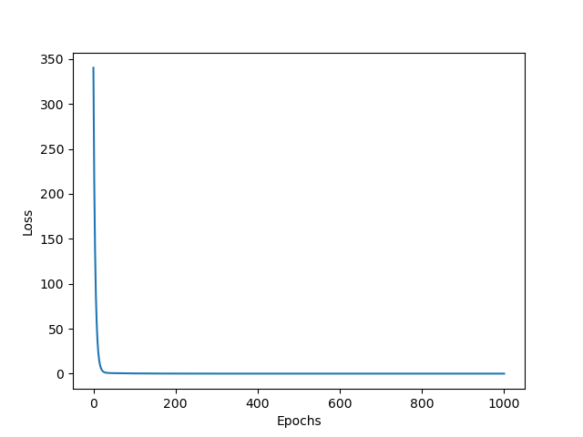

Matrix differentiation using limits
let us take
Input Matrix,
\(A = \begin{bmatrix} a_{11} & a_{12} & \dots & a_{1j} \\ a_{21} & a_{22} & \dots & a_{2j} \\ \vdots & \vdots & \ddots
& \vdots \\ a_{i1} & a_{i2} & \dots & a_{ij} \end{bmatrix}\)
Weight Matrix,
\(W = \begin{bmatrix} w_{11} \\ w_{21} \\ \vdots \\ w_{j1} \end{bmatrix}\)
Output Matrix
\(Y = \begin{bmatrix} y_{11} \\ y_{21} \\ \vdots \\ y_{i1} \end{bmatrix}\)
Y Predict Matrix,
\(\hat{Y} = \begin{bmatrix} \hat{y}_{11} \\ \hat{y}_{21} \\ \vdots \\ \hat{y}_{i1} \end{bmatrix}\)
Loss [MSE]
\(loss = \frac{1}{N}\sum(Y-\hat{Y})^2 \dots \dots \) here \(N\) is the number of rows in input matrix \(A\)
\(loss = \frac{1}{N}\sum(Y-A.W)^2\)
\(loss = \frac{1}{N}\sum \left\{ \begin{bmatrix} y_{11} \\ y_{21} \\ \vdots \\ y_{i1} \end{bmatrix} - \begin{bmatrix}
a_{11} & a_{12} & \dots & a_{1j} \\ a_{21} & a_{22} & \dots & a_{2j} \\ \vdots & \vdots & \ddots & \vdots \\ a_{i1} &
a_{i2} & \dots & a_{ij} \end{bmatrix} \cdot \begin{bmatrix} w_{11} \\ w_{21} \\ \vdots \\ w_{j1} \end{bmatrix}
\right\}^2\)
\(loss = \frac{1}{N}\sum \left\{ \begin{bmatrix} y_{11} \\ y_{21} \\ \vdots \\ y_{i1} \end{bmatrix} - \begin{bmatrix}
a_{11}w_{11} + a_{12}w_{21} + \dots + a_{1j}w_{j1} \\ a_{21}w_{11} + a_{22}w_{21} + \dots + a_{2j}w_{j1} \\ \vdots \\
a_{i1}w_{11} + a_{i2}w_{21} + \dots + a_{ij}w_{j1} \end{bmatrix} \right\}^2\)
\(loss = \frac{1}{N}\sum \left\{\begin{bmatrix} y_{11} - a_{11}w_{11} + a_{12}w_{21} + \dots + a_{1j}w_{j1} \\ y_{21}
- a_{21}w_{11} + a_{22}w_{21} + \dots + a_{2j}w_{j1} \\ \vdots \\ y_{i1} - a_{i1}w_{11} + a_{i2}w_{21} + \dots +
a_{ij}w_{j1} \end{bmatrix} \right\}^2\)
\(loss = \frac{1}{N}\sum \left\{\begin{bmatrix} (y_{11} - a_{11}w_{11} + a_{12}w_{21} + \dots + a_{1j}w_{j1})^2 \\
(y_{21} - a_{21}w_{11} + a_{22}w_{21} + \dots + a_{2j}w_{j1})^2 \\ \vdots \\ (y_{i1} - a_{i1}w_{11} + a_{i2}w_{21} +
\dots + a_{ij}w_{j1})^2 \end{bmatrix} \right\}\)
\(loss = \frac{1}{N} \left\{\begin{matrix} (y_{11} - a_{11}w_{11} + a_{12}w_{21} + \dots + a_{1j}w_{j1})^2 \\ +(y_{21}
- a_{21}w_{11} + a_{22}w_{21} + \dots + a_{2j}w_{j1})^2 \\ \vdots \\ +(y_{i1} - a_{i1}w_{11} + a_{i2}w_{21} + \dots +
a_{ij}w_{j1})^2 \end{matrix} \right\}\)
Grad
\(loss(W) = \frac{1}{N} \left\{\begin{matrix} (y_{11} - a_{11}w_{11} + a_{12}w_{21} + \dots + a_{1j}w_{j1})^2 \\ +(y_{21}
- a_{21}w_{11} + a_{22}w_{21} + \dots + a_{2j}w_{j1})^2 \\ \vdots \\ +(y_{i1} - a_{i1}w_{11} + a_{i2}w_{21} + \dots +
a_{ij}w_{j1})^2 \end{matrix} \right\}\)
\(\displaystyle \delta w_{j1} = \lim_{h_{j1} \rightarrow 0} \frac{loss(w_{j1}+h) - loss(w_{j1}-h)}{2h}\)
\(\delta W = \begin{bmatrix} \displaystyle \lim_{h \rightarrow 0} \frac{loss(w_{11}+h) - loss(w_{11}-h)}{2h} \\ \displaystyle \lim_{h \rightarrow 0} \frac{loss(w_{21}+h) - loss(w_{21}-h)}{2h} \\ \vdots \\ \displaystyle \lim_{h \rightarrow 0} \frac{loss(w_{j1}+h) - loss(w_{j1}-h)}{2h} \end{bmatrix} \)
Simple Python Example
import numpy as np
import matplotlib.pyplot as plt
np.random.seed(0)
# Matrices
A = np.array([
[1, 2, 3],
[4, 5, 6],
[7, 8, 9]
], dtype='float32')
W = np.random.randn(3, 1)
previous_W = W.copy()
Y = np.array([[14], [32], [50]])
# Loss function [MSE]
def loss(Y, A, W):
return ((Y - A @ W)**2).mean()
# Grad
def dW(Y, A, W, h):
dw = []
for i in range(len(W)):
w_plus = W.copy()
w_minus = W.copy()
w_plus[i][0] += h
w_minus[i][0] -= h
dw.append((loss(Y, A, w_plus) - loss(Y, A, w_minus)) / 2*h)
return np.array(dw).reshape(-1, 1)
print('Loss:', loss(Y, A, W))
losses = [loss(Y, A, W)]
# iteration
for i in range(1000):
W = W - dW(Y, A, W, 0.1) # grad
if i > 995 or i < 5:
print(f'Loss ({i+1}):', loss(Y, A, W))
elif i in [6,7,8]:
print(' .')
losses.append(loss(Y, A, W))
# Output
print(f'W: {previous_W.flatten()} -> {W.flatten()}')
print(f'Y: {Y.flatten()} ~= {(A @ W).flatten()}')
# Graph
plt.plot(losses)
plt.xlabel('Epochs')
plt.ylabel('Loss')
plt.savefig('graph.png')
plt.close()
Output
$ python main.py
Loss: 340.381080443314
Loss (1): 271.2823807105329
Loss (2): 216.2515975467686
Loss (3): 172.42400336832483
Loss (4): 137.51824026392174
Loss (5): 109.71752315572326
.
.
.
Loss (997): 2.7843784765948775e-07
Loss (998): 2.742164675205845e-07
Loss (999): 2.7005908748527544e-07
Loss (1000): 2.6596473724906243e-07
W: [1.76405235 0.40015721 0.97873798] -> [1.32439537 1.35257131 3.32322317]
Y: [14 32 50] ~= [13.99920748 31.99977701 50.00034653]
Graph
